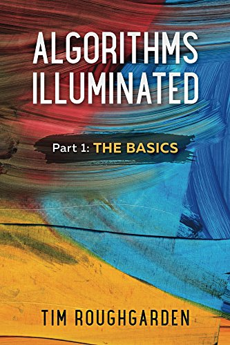

|  |
DescriptionAlgorithms are the heart and soul of computer science. Their applications range from network routing and computational genomics to public-key cryptography and database system implementation. Studying algorithms can make you a better programmer, a clearer thinker, and a master of technical interviews. Algorithms Illuminated is an accessible introduction to the subject---a transcript of what an expert algorithms tutor would say over a series of one-on-one lessons. The exposition is rigorous but emphasizes the big picture and conceptual understanding over low-level implementation and mathematical details. Part 1 of the book series covers asymptotic analysis and big-O notation, divide-and-conquer algorithms and the master method, randomized algorithms, and several famous algorithms for sorting and selection. |